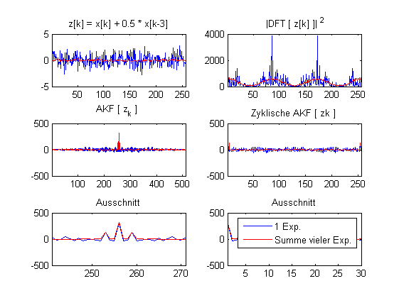

close all
clear
clc
WERTE = 256;
EXP = 100;
x =randn(EXP,WERTE);
y =[1 0 0 0.5];
z =conv2(x,y,'same');
akf_z = [];
for i=1:EXP;
akf_z(i,:) = xcorr(z(i,:));
end
abs_fft_z=abs(fft(z'))';
abs2_fft_z = abs_fft_z.^2;
z_akf_z = real(ifft(abs2_fft_z')');
figure(1)
subplot(3,2,1)
plot(z(1,:));hold on ; plot(sum(z)/EXP,'r')
title('z[k] = x[k] + 0.5 * x[k-3]');
xlim([1, WERTE]);
subplot(3,2,2)
plot(abs2_fft_z(1,:));hold on ; plot(sum(abs2_fft_z)/EXP,'r')
title(' |DFT [ z[k] ]| ^2')
xlim( [1, WERTE]);
subplot(3,2,3);
plot(akf_z(1,:));hold on ; plot(sum(akf_z)/EXP,'r')
title('AKF [ z_k ] ');
xlim( [1, 2*WERTE-1]);
subplot(3,2,5)
plot(akf_z(1,:));hold on ; plot(sum(akf_z)/EXP,'r')
title(' Ausschnitt ')
xlim([WERTE-15,WERTE+15]);
subplot(3,2,4)
plot(z_akf_z(1,:));hold on ; plot(sum(z_akf_z)/EXP,'r'); hold off
title('Zyklische AKF [ zk ]')
xlim( [1, WERTE]);
subplot(3,2,6)
plot(z_akf_z(1,:));hold on ; plot(sum(z_akf_z)/EXP,'r')
title('Ausschnitt')
xlim([1 30]); legend('1 Exp.','Summe vieler Exp.')
